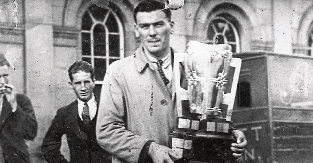
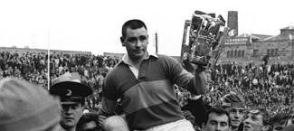
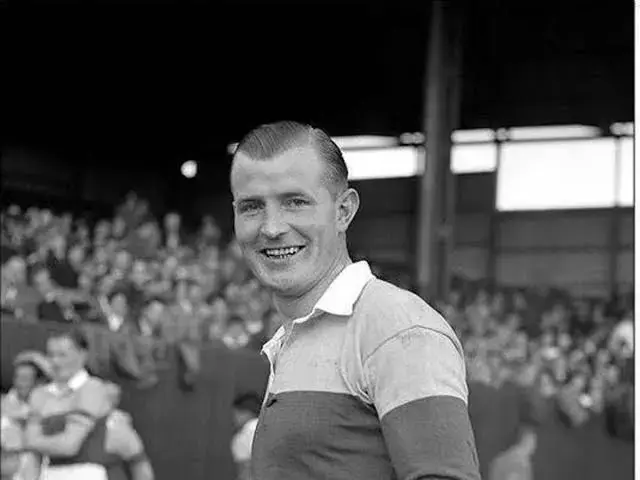
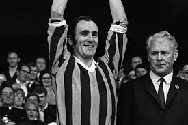
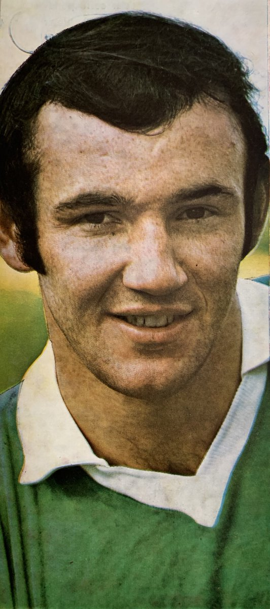
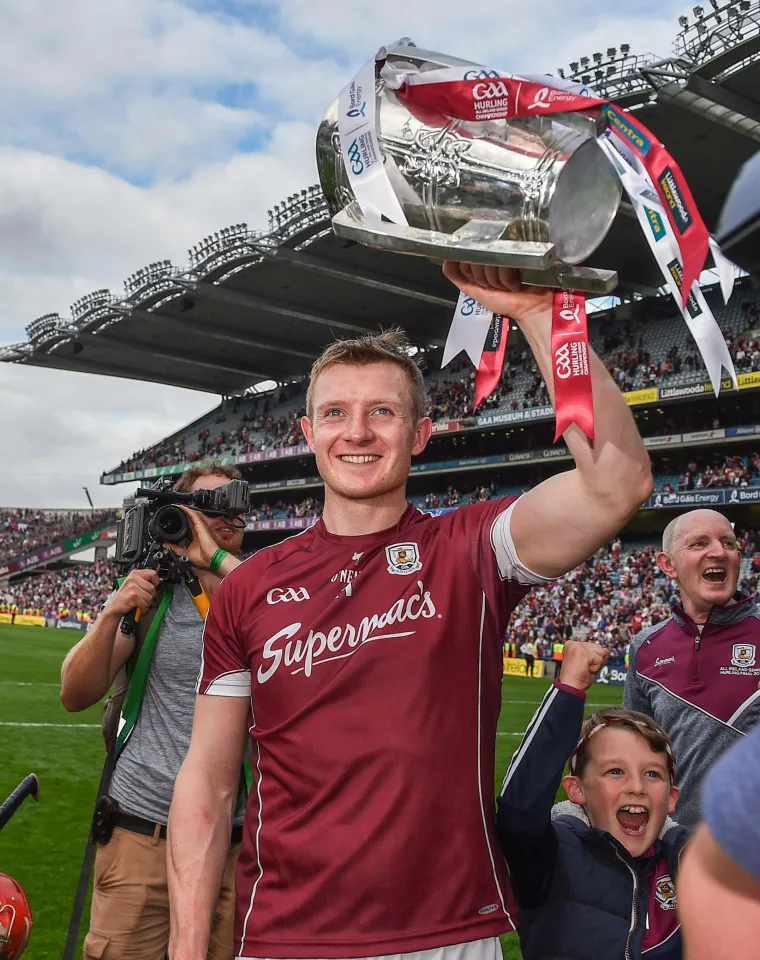
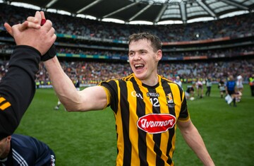

Cork
Christy Ring
Widely regarded as one of the greatest hurlers in history, Christy Ring won eight All-Ireland titles and became an icon of the game.
Widely regarded as one of the greatest hurlers in history, Christy Ring won eight All-Ireland titles and became an icon of the game.

A legendary forward whose skill, athleticism and influence helped shape modern hurling.

One of Tipperary's finest forwards, Jimmy Doyle combined scoring brilliance with remarkable consistency throughout the golden era of Tipp hurling.

A towering figure in Wexford hurling whose scoring exploits and leadership made him one of the game's enduring legends.

Widely regarded as one of the greatest forwards ever to play the game, renowned for his scoring accuracy and vision.

A central figure in Limerick's success during the 1970s, celebrated for his athleticism and commanding presence.
A versatile and inspirational leader who helped define one of Offaly's most successful periods in hurling history.
The most decorated hurler of the modern era, whose leadership and scoring records helped define Kilkenny's dominance.

A modern icon whose skill, composure and memorable scores inspired a new generation of hurling supporters.

One of the defining players of the modern game, combining power, accuracy and leadership at the highest level.